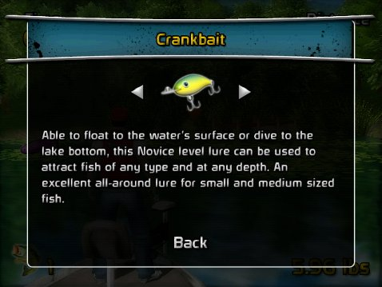

12 |
Leurres |
 |
|
Ensuite, sélectionnez un leurre. Il y a des leurres différents plus adaptés à chaque type de poisson. Les leurres qui flottent fonctionnent mieux pour les petits poissons qui nagent en surface, les leurres qui plongent fonctionnent mieux pour les poissons qui restent près du fond du lac. Les leurres qui plongent peuvent flotter dans les eaux peu profondes lorsqu’ils sont jetés lentement ou plonger profondément lorsqu’ils sont jetés rapidement. Les leurres sont aussi divisés en différents niveaux. Les leurres Novices attirent les poissons à travers une large gamme de vitesses de moulinet, mais manquent de capacité de tension pour attirer les plus grands poissons. Les leurres Experts ont de meilleures capacités de tension et une meilleure attraction à des vitesses de moulinet idéales, mais obtiendront un mauvais résultat pour attirer les poissons s’ils sont lancés trop lentement ou rapidement. Les leurres Experts également utilisent plus rapidement les Mètres de coulée que les leurres Novices, rendant plus difficile d’optimiser la distance de lancement. Les leurres Intermediate sont situés entre le niveau Novice et Expert.
Chaque profil commence avec un leurre Novice, le Crankbait, qui peut être utilisé pour lancer à n'importe quelle profondeur,
mais qui aura du mal à attraper un poisson de plus grande taille.
Une fois que les leurres additionnels sont débloqués,
appuyez sur En cours de jeu, vous pouvez faire une pause et sélectionner View Lures (Voir leurres) pour lire les descriptions des leurres disponibles. Les leurres bloqués s’afficheront, ainsi que les étapes pour débloquer chaque leurre. |
 et
et  avant de lancer pour passer en revue les leurres disponibles.
avant de lancer pour passer en revue les leurres disponibles.
 |
 |
 |